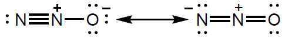

| Date | May 2019 | Marks available | 1 | Reference code | 19M.2.hl.TZ2.3 |
| Level | HL | Paper | 2 | Time zone | TZ2 |
| Command term | Deduce | Question number | 3 | Adapted from | N/A |
Question
Dinitrogen monoxide, N2O, causes depletion of ozone in the stratosphere.
Different sources of N2O have different ratios of 14N : 15N.
The Lewis (electron dot) structure of the dinitrogen monoxide molecule can be represented as:

Outline why ozone in the stratosphere is important.
Dinitrogen monoxide in the stratosphere is converted to nitrogen monoxide, NO (g).
Write two equations to show how NO (g) catalyses the decomposition of ozone.
State one analytical technique that could be used to determine the ratio of 14N : 15N.
A sample of gas was enriched to contain 2 % by mass of 15N with the remainder being 14N.
Calculate the relative molecular mass of the resulting N2O.
Predict, giving two reasons, how the first ionization energy of 15N compares with that of 14N.
Explain why the first ionization energy of nitrogen is greater than both carbon and oxygen.
Nitrogen and carbon:
Nitrogen and oxygen:
State what the presence of alternative Lewis structures shows about the nature of the bonding in the molecule.
State, giving a reason, the shape of the dinitrogen monoxide molecule.
Deduce the hybridization of the central nitrogen atom in the molecule.
Markscheme
absorbs UV/ultraviolet light «of longer wavelength than absorbed by O2» [✔]
NO (g) + O3 (g) → NO2 (g) + O2 (g) [✔]
NO2 (g) + O3 (g) → NO (g) + 2O2 (g) [✔]
Note: Ignore radical signs.
Accept equilibrium arrows.
Award [1 max] for NO2 (g) + O (g) → NO (g) + O2 (g).
mass spectrometry/MS [✔]
« =» 14.02 [✔]
«Mr = (14.02 × 2) + 16.00 =» 44.04 [✔]
Any two:
same AND have same nuclear charge /number of protons/Zeff [✔]
same AND neutrons do not affect attraction/ionization energy/Zeff
OR
same AND neutrons have no charge [✔]
same AND same attraction for «outer» electrons [✔]
same AND have same electronic configuration/shielding [✔]
Note: Accept “almost the same”.
“Same” only needs to be stated once.
Nitrogen and carbon:
N has greater nuclear charge/«one» more proton «and electrons both lost from singly filled p-orbitals» [✔]
Nitrogen and oxygen:
O has a doubly filled «p-»orbital
OR
N has only singly occupied «p-»orbitals [✔]
Note: Accept “greater e– - e- repulsion in O” or “lower e– - e- repulsion in N”.
Accept box annotation of electrons for M2.
delocalization
OR
delocalized π-electrons [✔]
Note: Accept “resonance”.
linear AND 2 electron domains
OR
linear AND 2 regions of electron density [✔]
Note: Accept “two bonds AND no lone pairs” for reason.
sp [✔]
Examiners report
Candidates sometimes failed to identify how ozone works in chemical terms, referring to protects/deflects, i.e., the consequence rather than the mechanism.
Many candidates recalled the first equation for NO catalyzed decomposition of ozone only. Some considered other radical species.
All candidates, with very few exceptions, answered this correctly.
Most candidates were able to calculate the accurate mass of N2O, though quite a few candidates just calculated the mass of N and didn’t apply it to N2O, losing an accessible mark.
Many students realized that neutrons had no charge and could not affect IE significantly, but many others struggled a lot with this question since they considered that 15N would have a higher IE because they considered the greater mass of the nucleus would result in an increase of attraction of the electrons.
Mixed responses here; the explanation of higher IE for N with respect to C was less well explained, though it should have been the easiest. It was good to see that most candidates could explain the difference in IE of N and O, either mentioning paired/unpaired electrons or drawing box diagrams.
Most candidates identified resonance for this given Lewis representation.
Though quite a number of candidates suggested a linear shape correctly, they often failed to give a complete correct explanation, just mentioning the absence of lone pairs but not two bonds, instead of referring to electron domains.
Hybridisation of the N atom was correct in most cases.